Soru 1Cevap: E
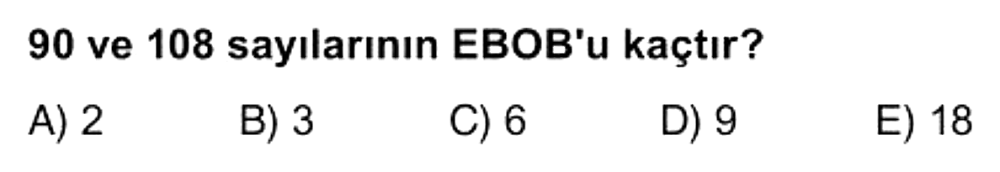
Çözüm
- $90=2\cdot3^2\cdot5$, $108=2^2\cdot3^3$.
- Ortak asalların küçük üslüleri: $2^1\cdot3^2$.
- $\text{EBOB}=18$ → E.
Cevap: E
Soru 2Cevap: B
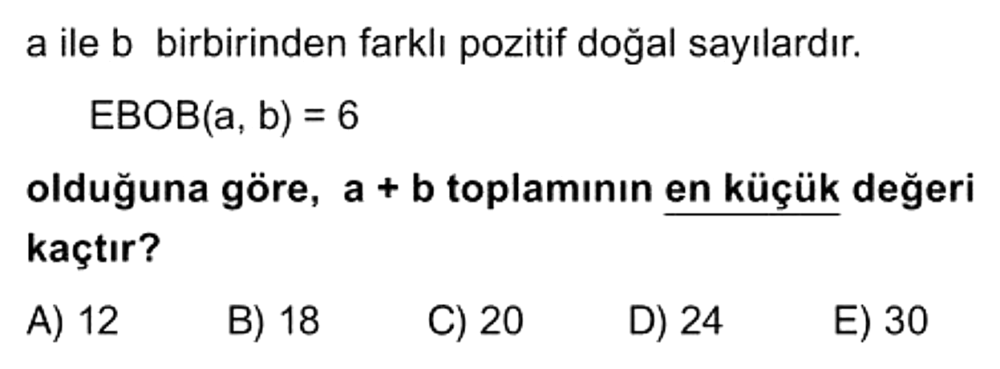
Çözüm
- $a=6m$, $b=6n$, $m\ne n$ ve $m,n$ aralarında asal.
- En küçük seçim $m=1$, $n=2$: $a=6$, $b=12$.
- $a+b=18$ → B.
Cevap: B
Soru 3Cevap: B
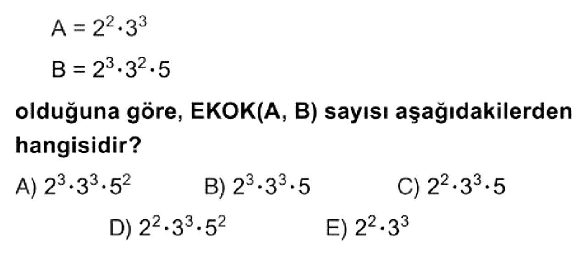
Çözüm
- EKOK için tüm asalların büyük üslüleri alınır.
- $2$'nin en büyük üssü 3, $3$'ün 3, $5$'in 1.
- $\text{EKOK}=2^3\cdot3^3\cdot5$ → B.
Cevap: B
Soru 4Cevap: D
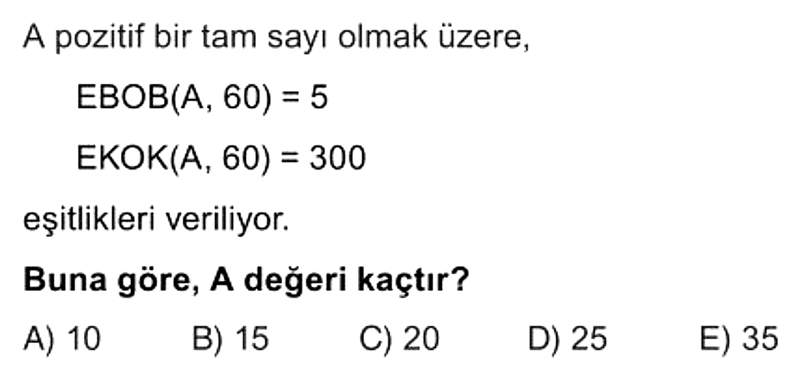
Çözüm
- $A\cdot60=\text{EBOB}\cdot\text{EKOK}=5\cdot300=1500$.
- $A=\frac{1500}{60}$.
- $A=25$ → D.
Cevap: D
Soru 5Cevap: C
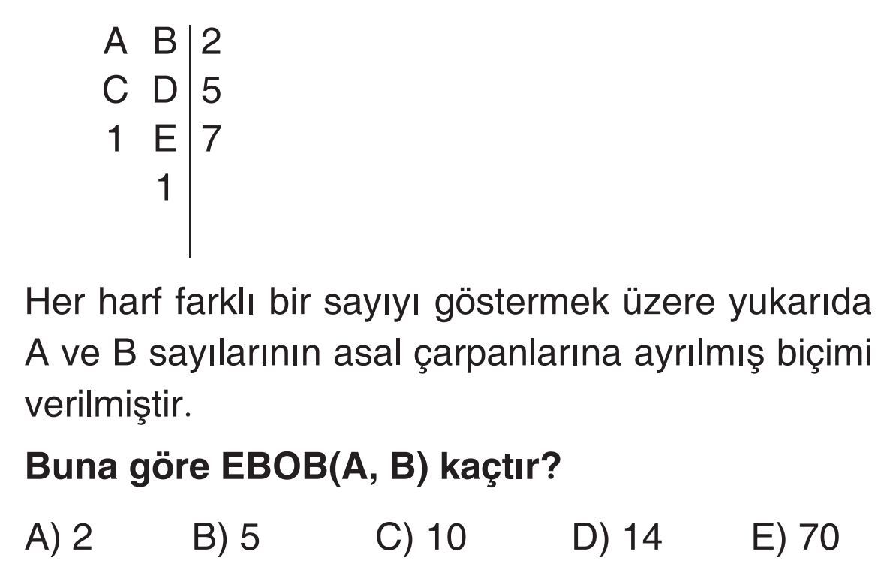
Çözüm
- Algoritmada $E=7$, $D=5\cdot7=35$, $B=2\cdot35=70$.
- Diğer sütunda $C=5$, $A=2\cdot5=10$.
- $\text{EBOB}(10,70)=10$ → C.
Cevap: C
Soru 6Cevap: E
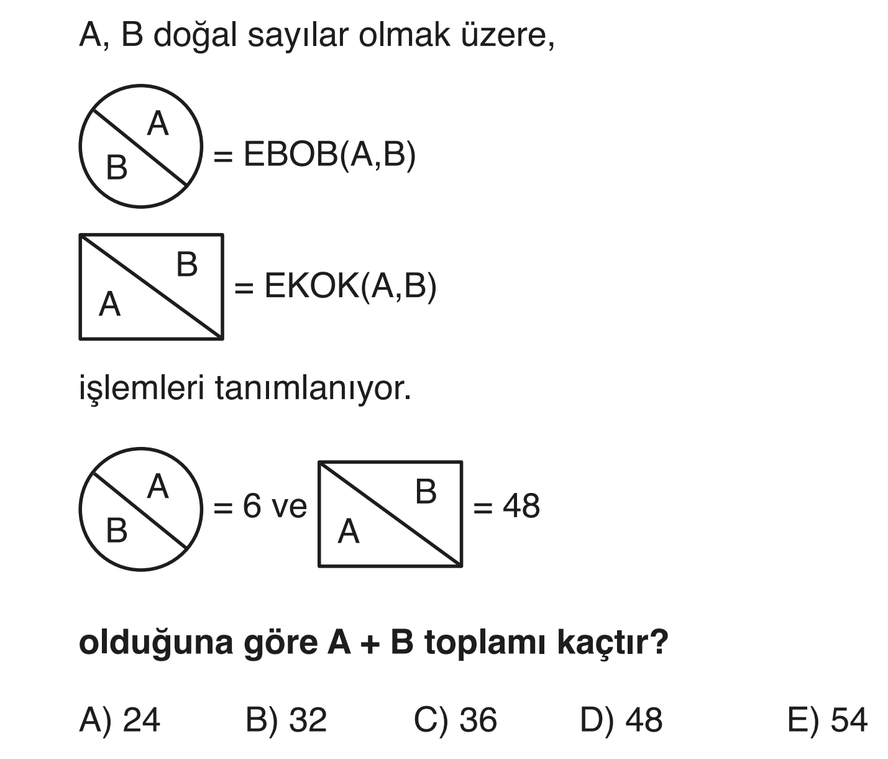
Çözüm
- $\text{EBOB}=6$, $\text{EKOK}=48$: $A=6a$, $B=6b$, $ab=8$, aralarında asal.
- $\{a,b\}=\{1,8\}$ → $6$ ve $48$.
- $A+B=54$ → E.
Cevap: E
Soru 7Cevap: D
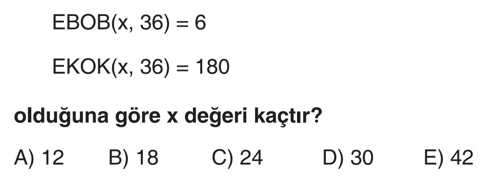
Çözüm
- $x\cdot36=\text{EBOB}\cdot\text{EKOK}=6\cdot180=1080$.
- $x=\frac{1080}{36}$.
- $x=30$ → D.
Cevap: D
Soru 8Cevap: E
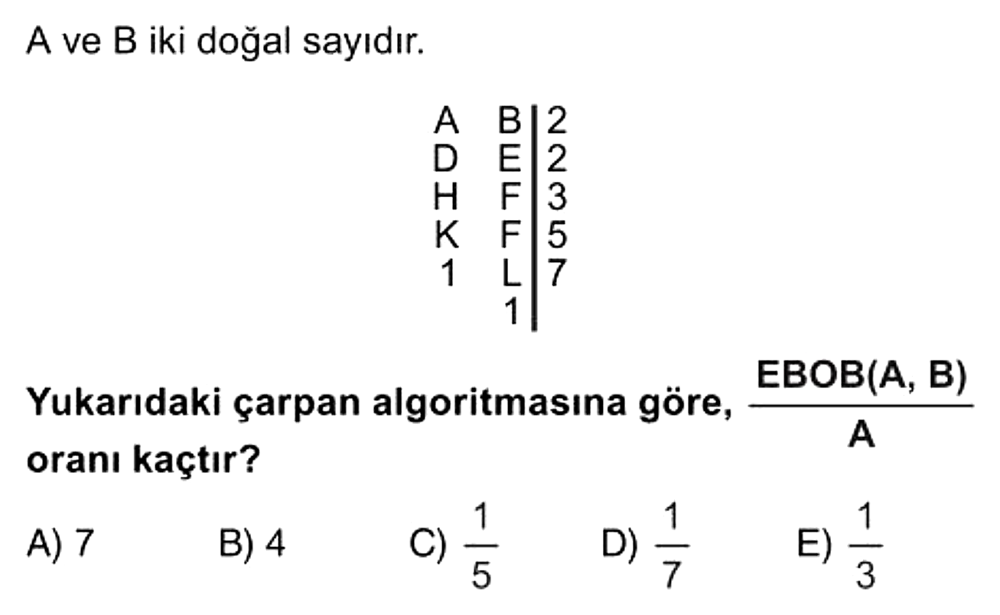
Çözüm
- Algoritma aşağıdan yukarı: $L=7$, $F=5\cdot7=35$, $E=2\cdot35=70$, $B=2\cdot70=140$.
- Diğer sütun: $K=5$, $H=3\cdot5=15$, $D=2\cdot15=30$, $A=2\cdot30=60$.
- $\text{EBOB}(60,140)=20$; $\frac{20}{60}=\frac13$ → E.
Cevap: E
Soru 9Cevap: C
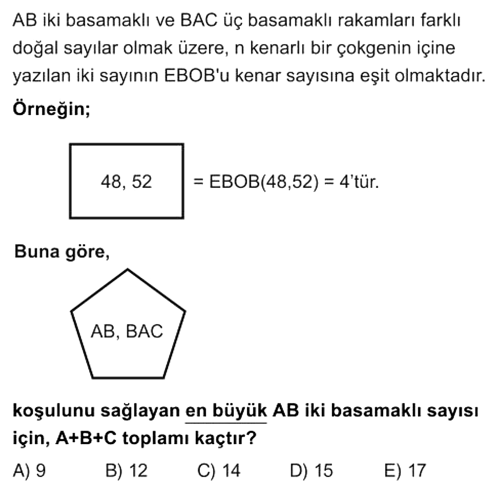
Çözüm
- Beşgen → $\text{EBOB}(AB,BAC)=5$: iki sayı da 5 ile bölünür → $B\in\{0,5\}$, $B$ ilk rakam → $B=5$; $C\in\{0,5\}$, farklı → $C=0$.
- En büyük $AB=95$: $\text{EBOB}(95,590)=5$ ✓.
- $A+B+C=9+5+0=14$ → C.
Cevap: C
Soru 10Cevap: A
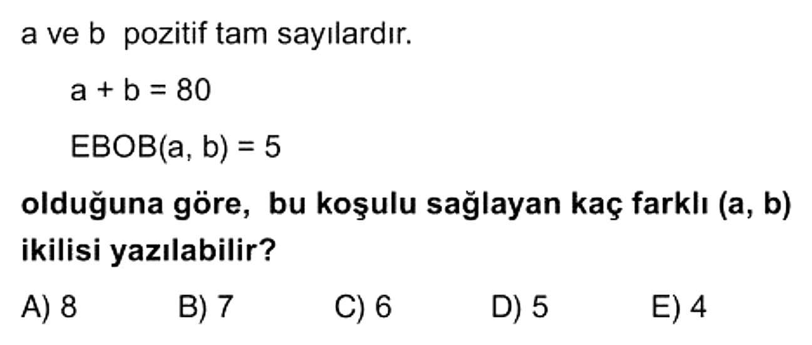
Çözüm
- $a=5m$, $b=5n$ ve $\text{EBOB}(m,n)=1$; $m+n=16$.
- Toplamı 16 olan aralarında asal pozitif ikililer: $(1,15),(3,13),(5,11),(7,9)$ ve yer değiştirmiş hâlleri.
- Toplam 8 sıralı ikili → A.
Cevap: A
Soru 11Cevap: C
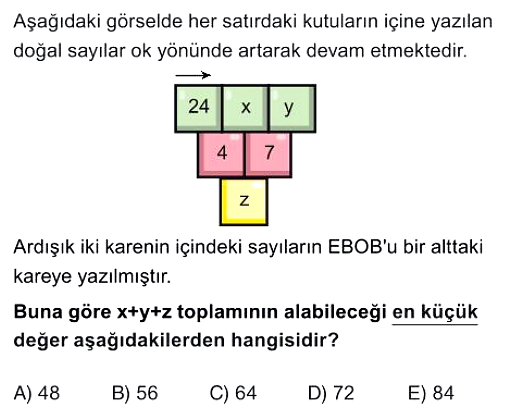
Çözüm
- $4=\text{EBOB}(24,x)$, $7=\text{EBOB}(x,y)$ → $x$ hem 4'ün hem 7'nin katı: en küçük $x=28$.
- $y>28$ ve $\text{EBOB}(28,y)=7$ → en küçük $y=35$; $z=\text{EBOB}(4,7)=1$.
- $28+35+1=64$ → C.
Cevap: C
Soru 12Cevap: B
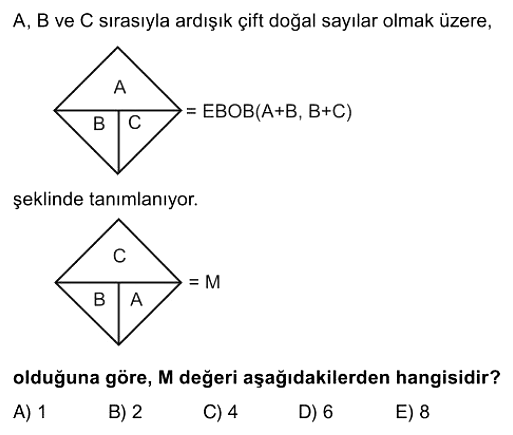
Çözüm
- $A=x$, $B=x+2$, $C=x+4$ ($x$ çift).
- $\text{EBOB}(A+B,B+C)=\text{EBOB}(2x+2,\,2x+6)=\text{EBOB}(2x+2,\,4)=2$ ($x+1$ tek).
- $M=\text{EBOB}(C+B,\,B+A)$ aynı ikili → $M=2$ → B.
Cevap: B
Soru 13Cevap: E
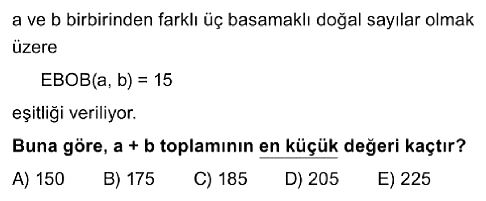
Çözüm
- $a=15m$, $b=15n$; $m,n$ farklı ve aralarında asal.
- Üç basamaklı olmaları için $15m\ge100 \Rightarrow m\ge7$; en küçük uygun ikili $(7,8)$.
- $a+b=105+120=225$ → E.
Cevap: E
Soru 14Cevap: D
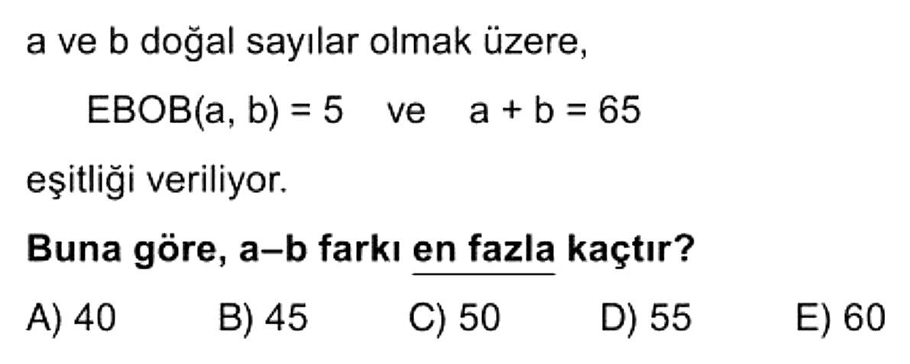
Çözüm
- $a=5m$, $b=5n$, $m+n=13$ ve aralarında asal.
- $a-b=5(m-n)$ en büyük $m=12$, $n=1$ için.
- $5\cdot11=55$ → D.
Cevap: D
Soru 15Cevap: B
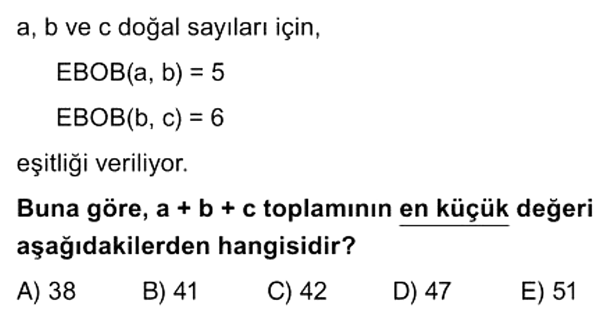
Çözüm
- $b$ hem 5'in hem 6'nın katı → $b$, 30'un katıdır; en küçük $b=30$.
- $\text{EBOB}(a,30)=5 \Rightarrow a=5$; $\text{EBOB}(30,c)=6 \Rightarrow c=6$.
- $a+b+c=5+30+6=41$ → B.
Cevap: B
Soru 16Cevap: D
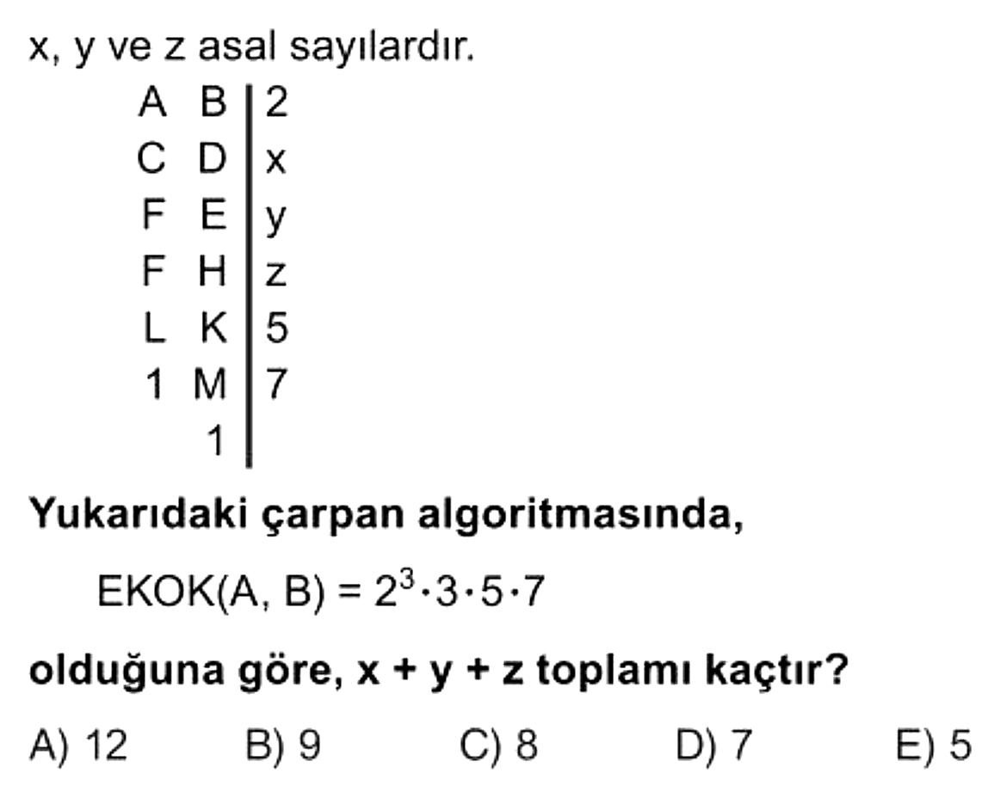
Çözüm
- Algoritmadaki bölenlerin çarpımı EKOK'u verir: $2\cdot x\cdot y\cdot z\cdot5\cdot7=2^3\cdot3\cdot5\cdot7$.
- Asallar küçükten büyüğe yazıldığından $x=2$, $y=2$, $z=3$.
- $x+y+z=7$ → D.
Cevap: D
Soru 17Cevap: D
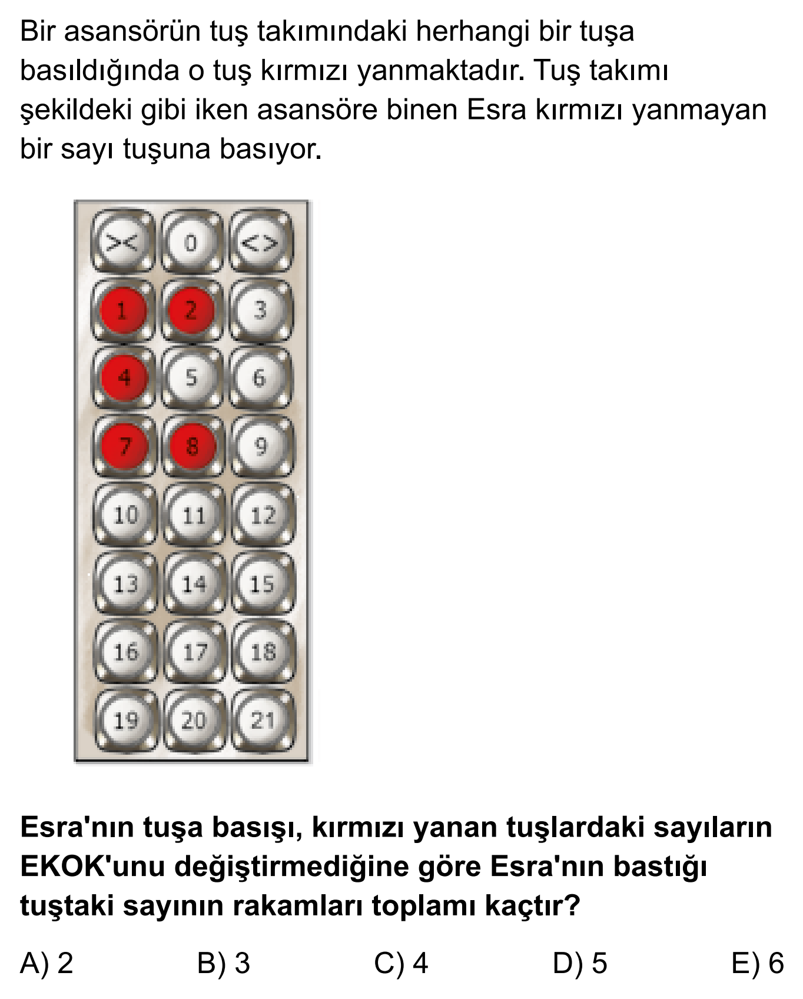
Çözüm
- Kırmızı tuşlar $1,2,4,7,8$ → EKOK $=56$.
- EKOK'u değiştirmeyen sayı 56'nın böleni olmalı; tuşlarda kırmızı olmayan bölen: $14$.
- $1+4=5$ → D.
Cevap: D
Soru 18Cevap: C
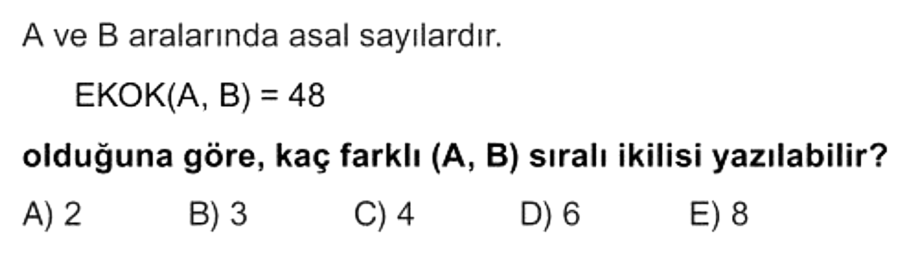
Çözüm
- $48=2^4\cdot3$; aralarında asal iki sayıda her asal kuvvet tamamen birine aittir.
- $2^4$ ve $3$ birbirinden bağımsız olarak $A$ ya da $B$'ye verilir: $2\cdot2=4$.
- 4 sıralı ikili: $(1,48),(48,1),(3,16),(16,3)$ → C.
Cevap: C
Soru 19Cevap: C
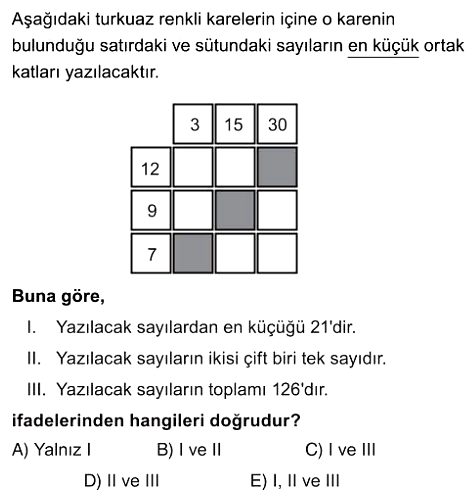
Çözüm
- Turkuaz (koyu) kareler: $12$–$30$, $9$–$15$, $7$–$3$ kesişimleri.
- $\text{EKOK}(12,30)=60$, $\text{EKOK}(9,15)=45$, $\text{EKOK}(7,3)=21$.
- En küçüğü 21 (I doğru); ikisi tek (II yanlış); toplam 126 (III doğru) → C.
Cevap: C
Soru 20Cevap: B
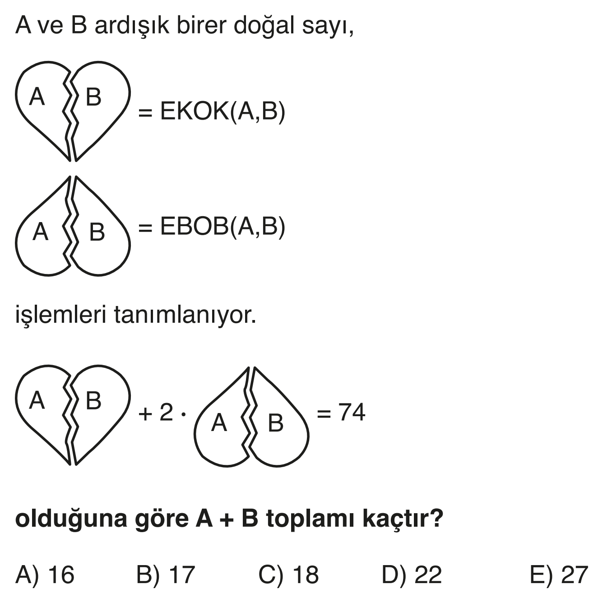
Çözüm
- Ardışık sayılar: $\text{EKOK}=AB$, $\text{EBOB}=1$.
- $AB+2=74 \Rightarrow AB=72=8\cdot9$.
- $A+B=17$ → B.
Cevap: B
Soru 21Cevap: C
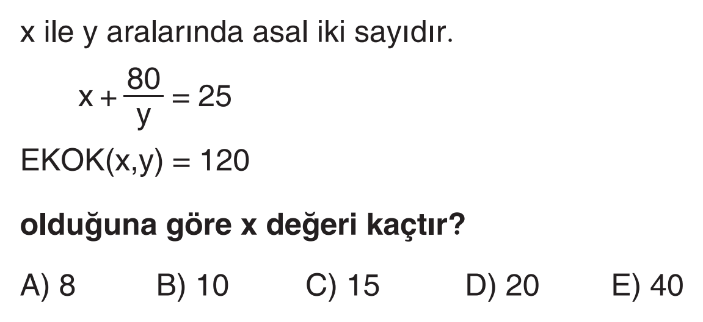
Çözüm
- Aralarında asal: $x\cdot y=\text{EKOK}=120$.
- $x+\frac{80}y=25 \Rightarrow xy+80=25y \Rightarrow 200=25y \Rightarrow y=8$.
- $x=\frac{120}8=15$ → C.
Cevap: C
Soru 22Cevap: A
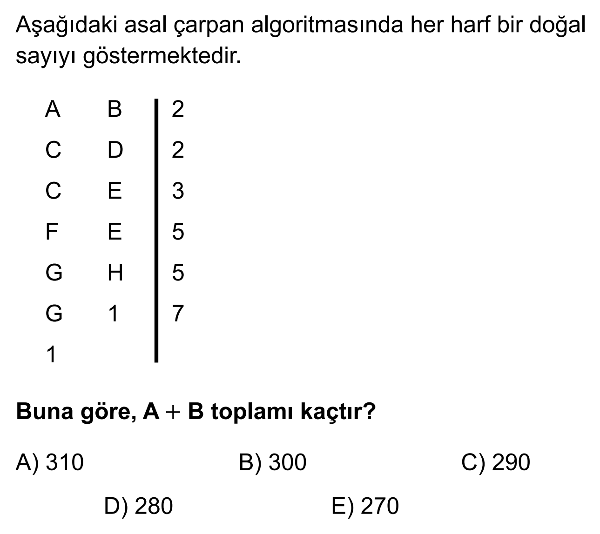
Çözüm
- Aşağıdan yukarı: $G=7$, $H=5$, $F=5\cdot7=35$, $E=5\cdot5=25$.
- $C=3\cdot35=105$, $D=2\cdot25=50$; $A=2\cdot105=210$, $B=2\cdot50=100$.
- $A+B=310$ → A.
Cevap: A
Soru 23Cevap: A
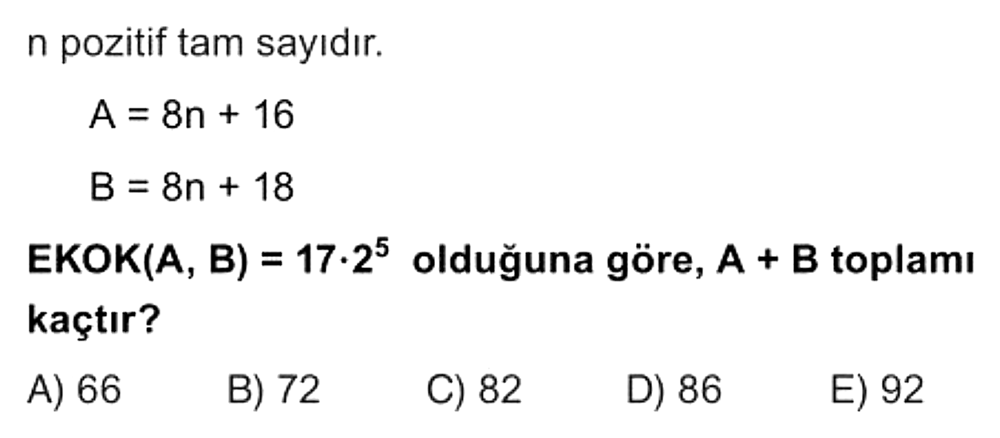
Çözüm
- $A=8(n+2)$, $B=2(4n+9)$; $\text{EBOB}(4n+8,4n+9)=1$ olduğundan $\text{EBOB}(A,B)=2$.
- $\text{EKOK}=\frac{A\cdot B}2=8(n+2)(4n+9)=17\cdot2^5 \Rightarrow (n+2)(4n+9)=68$.
- $n=2$: $A=32$, $B=34$, $A+B=66$ → A.
Cevap: A
Soru 24Cevap: B
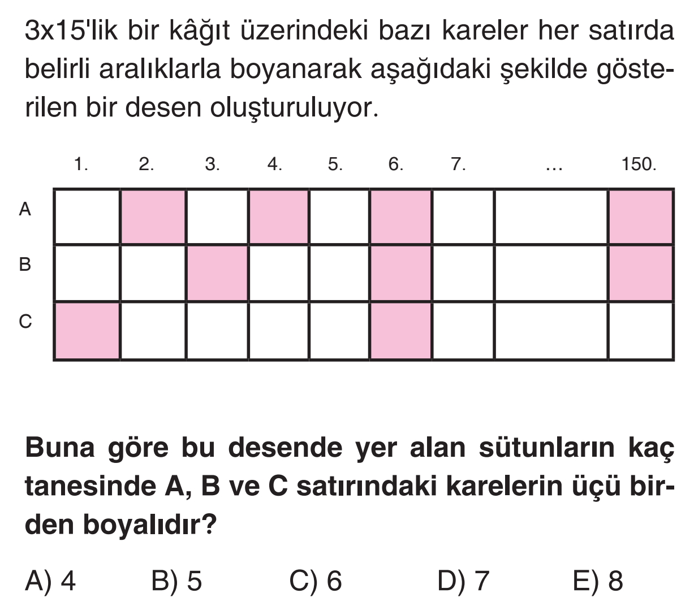
Çözüm
- A satırında çift sütunlar, B satırında 3'ün katı sütunlar, C satırında 5'e bölümünden 1 kalanı veren sütunlar boyalı.
- Üçü birden: $n$ hem 6'nın katı hem $5k+1$ biçiminde → $n=6,36,66,96,126$ (her 30'da bir).
- 150 sütunda 5 tane → B.
Cevap: B